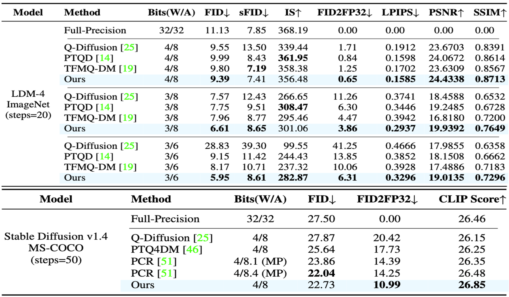

AccuQuant: Simulating Multiple Denoising Steps for Quantizing Diffusion Models
NeurIPS 2025
Abstract
We present in this paper a novel post-training quantization (PTQ) method, dubbed AccuQuant, for diffusion models. We show analytically and empirically that quantization errors for diffusion models are accumulated over denoising steps in a sampling process. To alleviate the error accumulation problem, AccuQuant minimizes the discrepancies between outputs of a full-precision diffusion model and its quantized version within a couple of denoising steps. That is, it simulates multiple denoising steps of a diffusion sampling process explicitly for quantization, accounting the accumulated errors over multiple denoising steps, which is in contrast to previous approaches to imitating a training process of diffusion models, namely, minimizing the discrepancies independently for each step. We also present an efficient implementation technique for AccuQuant, together with a novel objective, which reduces a memory complexity significantly from $\mathcal{O}(n)$ to $\mathcal{O}(1)$, where $n$ is the number of denoising steps. We demonstrate the efficacy and efficiency of AccuQuant across various tasks and diffusion models on standard benchmarks.
Quantitative Results

Quantization results for class-/text-conditional image generation on various dataset.
We show in those Tables, quantitative comparisons of our method and the state-of-the-art methods for class-/text-conditional image generation on ImageNet and MS-COCO dataset. We summarize our findings as follows: (1) AccuQuant outperforms all previous approaches, specially designed to quantize diffusion models, by significant margins in terms of FID2FP32. Specifically, it provides better results than PCR, even with lower bit-widths. This demonstrates that AccuQuant reduces accumulated errors effectively, and better maintains the behavior of full-precision models compared to other methods. (2) AccuQuant achieves significant performance gains, especially in low-bit settings for activation quantization. Note that low-bit settings are more vulnerable to accumulated errors, due to the limited representational capacity. This demonstrates the robustness of AccuQuant and its ability to maintain high performance, even under constrained conditions. (3) AccuQuant outperforms the state-of-the-art methods in various standard benchmarks, verifying that considering multiple denoising steps in a sampling process is effective to reduce accumulated errors for quantizing diffusion models.
Qualitative Results


Quantization results for text-conditional image generation with stable-diffusion v1.4 under W4A8. Images of each row correspond to the output of the full-precision model and AccuQuant.
Paper
Acknowledgements
This work was supported by Institute of Information & Communications Technology Planning & Evaluation (IITP) grants funded by the Korea government (MSIT) (No.RS-2022-00143524, Development of Fundamental Technology and Integrated Solution for Next-Generation Automatic Artificial Intelligence System, No.RS-2025-09942968, AI Semiconductor Innovation Lab(Yonsei University)), the National Research Foundation of Korea(NRF) grants funded by the Korea government(MSIT) (No. 2023R1A2C2004306, RS-2025-02216328), Samsung Electronics Co., Ltd (IO240520-10013-01), and the Yonsei Signature Research Cluster Program of 2025 (2025-22-0013).